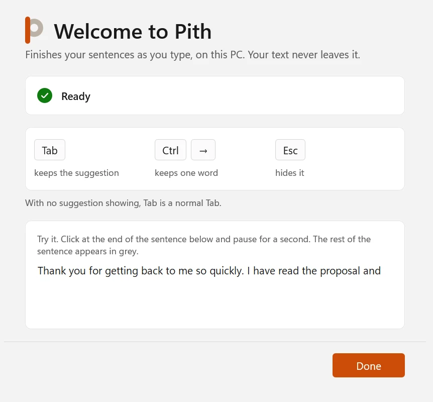
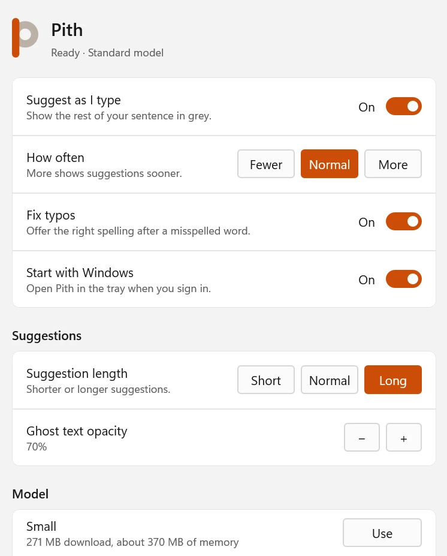
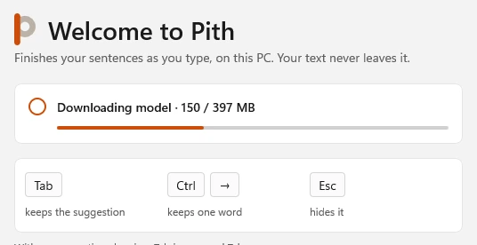

Set up in one window.

Local autocomplete for every text box. Runs on your CPU, no account.

Any CPU with AVX2, most PCs since 2015.
Linux with X11 is experimental. macOS is planned.
7.4 MB
One exe. No installer, no webview.
30 MB
Memory while idle, before the model loads.
On Windows, Pith never sees your keystrokes.
The share you skip if you accept every right suggestion.
Work emailHi Sam, thanks for the update. Could you send me the final numbers before Thursday?
23%fewer keystrokes
Long documentThe second phase of the project focuses on reducing the time it takes to onboard a new team.
34%fewer keystrokes
SlackPushed the fix to staging, can someone take a look before we merge?
21%fewer keystrokes
GermanIch wollte nur kurz nachfragen, ob Sie die Unterlagen schon erhalten haben.
44%fewer keystrokes
SpanishGracias por tu mensaje. Te escribo para confirmar la reunión del jueves.
40%fewer keystrokes
Example sentences. Figures replayed offline on an i5-9300H laptop.
From your memory and cores. Switch any time in Settings.
| Model | Download | Memory, about | Per keystroke | Saved |
|---|---|---|---|---|
| SmallEnglish first | 271 MB | 370 MB | 148 ms | 26% |
| StandardMany languages | 397 MB | 590 MB | 206 ms | 29% |
| LargeBest suggestions | 1,107 MB | 1,270 MB | 520 ms | 37% |
Median per keystroke on one 8-core PC.

The welcome window fetches the model once.
